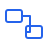
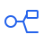
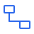
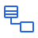

Пишите код — получайте диаграмму
Редактор диаграмм как кода. Вы описываете схему текстом, DSLKit проверяет её по правилам нотации и рисует.
Бесплатно в бете: до 5 диаграмм в день.
idef0 "Order process" { A0 "Process order" { input Order control Rules output Invoice } // A1 появится ниже }
Нотации
Шесть нотаций в одном редакторе. В бете — три.

IDEF0
Блоки, входы, управление, выходы и механизмы.
в бете
DFD
Процессы, хранилища и потоки данных.
в бете
ERD
Сущности и связи для баз данных.
в бете
UML
Классы, последовательности и другое.
в планахBPMN
События, задачи и шлюзы.
в планахСети Петри
Позиции, переходы и фишки.
в планах
Как это работает
От идеи до схемы за три шага.
Пишете код
Описываете диаграмму на DSL, шаблоны и подсказки помогают начать.
Видите схему
Холст обновляется сразу, ошибки подсвечиваются с пояснением.
Экспортируете
SVG, PNG, PlantUML или Mermaid.
Для кого
Студентам
Лабораторные, курсовые и дипломы с диаграммами, которые легко править.
Разработчикам
Схемы лежат рядом с кодом и попадают в историю Git.
Аналитикам
Процессы и данные описываются текстом без ручного рисования.
Тарифы
Условия могут измениться после беты.
Free
- До 5 диаграмм в день
- Все доступные нотации
- Экспорт в SVG и PNG
Pro
- Без дневного лимита
- История версий
- Совместная работа и API
Вопросы
Что такое DSLKit?
Веб-редактор диаграмм как кода: схема описывается текстом, редактор проверяет и рисует её.
Нужно ли уметь программировать?
Нет. Синтаксис короткий, а шаблоны помогают написать первую диаграмму.
Какие нотации будут?
UML, BPMN, ERD, DFD, IDEF0 и сети Петри. Первыми — IDEF0, DFD и ERD.
Сколько это стоит?
В бете бесплатно, до пяти диаграмм в день. Pro позже.
Запишитесь в бету
Оставьте почту, и мы сообщим, когда откроется доступ.